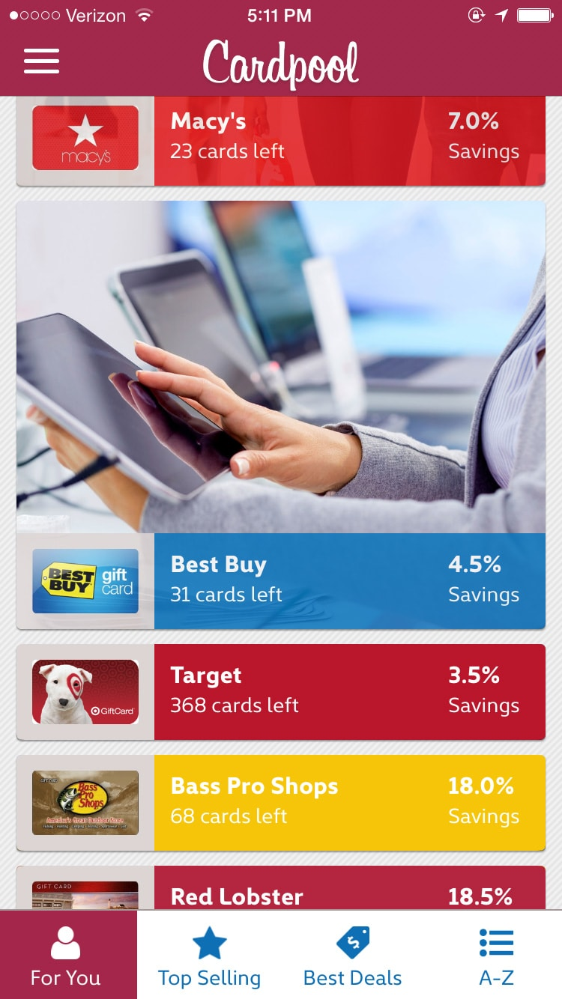

Background
As the sole UX designer for Cardpool, my challenge was to launch our first mobile app, moving from sketchpad to app store in 6 months. The project clock was already ticking by the time I was hired, so I was expected to air drop in at full sprint.
Cardpool is an online exchange for pre-owned gift cards. While website customers can both buy discounted gift cards and sell unwanted cards, the product mission for the app was to increase sales. Our ancillary goal was to expand the user base to a wider audience by modernizing the user interface and visual design.
Process
Right away I began conducting research, beginning with thorough competitive analysis. Combining this research with our product goals, I began architecting the app flow. Meanwhile, I studied our demographics to create personas for visual design. Once UX designs were ready, I conducted in-person usability testing to discover pain points. I prepared several prototypes of app-flows and animations as well as providing art-direction to our external visual design team. After launch, I have continued to recommend app updates based on the study of our analytics and direct user feedback.
Personas & Marketing Research
Demographic and survey research revealed that our 50% of the legacy user base was 45 and older. Additionally, a large majority were Caucasian. I developed personas to guide our visual design decisions towards appealing to a younger and more diverse user base.
Bio:
Male, 26
Unmarried
Associate's Degree
Medical Lab Technician Intern
Desires:
To find deals at his favorite popular clothing brands and restaurants.
Behaviors & Beliefs:
As a young intern, Luis has a tight budget yet is brand-conscious. Luis is a savvy online shopper and quick to try new apps.
With long hours and a busy personal life, his home is mostly a crash-pad. He eats out often and shops online primarily via his mobile phone.
Favorite Apps:
Snapchat
Amazon
Bio:
Female, 32
Married with 4 y/o daughter
Bachelor's Degree
Account Manager
Desires:
To balance the family budget while renovating and decorating her new home.
Behaviors & Beliefs:
Elaine enjoys maximizes her budget from every angle. She uses multiple credit cards to earn points.
She frequently uses coupons and online discount codes, and she waits for sales to make purchases. Her new home is her castle, and she shops to make it beautiful.
Favorite Apps:
RetailMeNot
Groupon
Competitive research
Cardpool’s top competitor was first to market with their mobile app, which meant we were playing catch up. I dissected their app’s user flow to find good ideas we could duplicate and to surface their usability flaws. Their app-map and navigation was intuitive but they lacked a visually dynamic presentation of their brands. I looked to other top online retailers for presentation ideas including lifestyle imagery and scrolling animation. Our top competitor had a strong checkout flow but lacked the strong security features that our product team required. I looked at banking and online wallet apps for ideas to guide users through the necessary security hurdles.

Usability testing

I had modeled the entire mobile app as a fully interactive prototype with real brands that could be used for precise usability testing. We hired a testing firm to provide facilities and recruit 10 users for 90 minute interview sessions. I identified the most important open-ended tasks to give each user, and I observed the interviews on-site to. We conducted interviews by day, and by night I iterated the prototype based on the days feedback.
We discovered an important oversight where we had included out-of-stock brands in our sort by top-discount, which led to user frustration. We also learned how to clarify our security hurdles with a better progress-meter and by making our forms more visually exciting. We learned many smaller but crucial lessons about the visual design, including improving readability with higher color-contrast and more visible error messages.
Prototyping & Design
To meet our tight deadline, we decided to outsource visual design to an agency. We also hired a team of temporary contract iOS developers to quickly scale our engineering talent pool. Given the number of external staff, I wanted to provide the team with a fully functional clickable prototype that modeled every button on every screen within the app.
Meanwhile, I provided art direction to the design agency and coordinated our contract copy editor. Development began as soon as the first screen had a wireframe and design mockup, and I managed to stay just ahead of the development team over the next seven months.
Results
- Launched the app in 7 months (1 month past plan).
- Exceeded 1 million in revenue 4 months after launch.
- Visit-to-sale conversion rate surpasses the industry average.
- 4.5 star rating in the app store (summer 2016 version).
You can download the Cardpool iPhone App from the Apple App store.